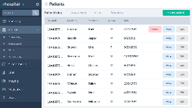
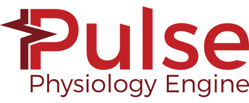

| # | Herramienta | Interfaz | Descripción | Ventajas |
|---|---|---|---|---|
| 1 | Funciona como software de registro médico electrónico de código abierto para mejorar la prestación de atención médica en entornos de bajos recursos. Estas soluciones de software EMR basadas en la nube permiten a los consultorios diseñar y crear los registros médicos de los pacientes |
|
||
| 2 |  |
Es otra aplicación de gestión de prácticas médicas y registros de salud electrónicos de código abierto y popular. Está certificado por ONC Complete Ambulatory EHR, y una comunidad activa de voluntarios y profesionales lo respalda. |
|
|
| 3 |  |
Es un registro médico electrónico de código abierto fácil de usar que funciona de manera rápida y eficiente. Puede personalizarlo para que se adapte a las necesidades del hospital de forma flexible y rápida. |
|
|
| 4 |  |
Es el sistema de historia clínica electrónica de código abierto totalmente alojado. Este nuevo sistema de gráficos de salud de código abierto ofrece una experiencia de usuario final definitiva con diferentes tipos y configuraciones de EMR. |
|
|
| 5 |  |
Si está buscando un software de registro médico electrónico gratuito para su negocio, entonces Solismed es la opción adecuada que ofrece una serie de característica |
|
|
| 6 |
Bahmni |
En todo el mundo, este software EMR fácil de usar es ampliamente aceptado e implementado en varios hospitales. Este sistema hospitalario y EMR utiliza OpenMRS para gestionar los registros médicos de los pacientes |
|
|
| 7 | Proporciona un backend XML-RPC y múltiples formatos de importación y exportación. Este sistema de gestión hospitalario gratuito está desarrollado para ofrecer servicios mejorados de gestión de la información sanitaria a los hospitales. |
|
||
| 8 | Es la versión especializada del software Dolibarr ERP y CRM que se mejora con el módulo Dolimed. Este software de registros médicos electrónicos de código abierto se adapta a las necesidades de los médicos y centros médicos para seguir a sus pacientes. |
|
||
| 9 | Es una solución gratuita basada en la nube que ayuda a los consultorios médicos a administrar la información del paciente y los registros digitales. |
|
||
| 10 |  |
Es un software de telemedicina gratuito que es seguro según HIPAA y permite que el médico y el paciente realicen videoconferencias. Tiene capacidades integradas de EMR, facturación médica y mHealth, que requieren gastos mínimos o nulos para su implementación. Además, los pacientes no tienen que gastar nada para aprovechar los servicios de este software de telemedicina con todas las funciones. |
|
|
| 11 |
HospitalRun |
 | Es uno de los primeros registros de salud electrónicos y sistemas de información hospitalaria más populares. El objetivo de HospitalRun es una mejor opción para sus contrapartes patentadas. |
|
| 12 |
OpenEyes |
Es una aplicación de registro electrónico de pacientes para oftalmología, desarrollada con contribuciones de una variedad de hospitales, instituciones, departamentos académicos, empresas e individuos. |
|
|
| 13 |
SMART Pediatric Growth Chart |
El propósito de esta aplicación es administrar y mostrar datos estadísticos de los pacientes de diferentes maneras. |
|
|
| 14 |
ERPNext como EMR y HIS |
Es una solución ERP gratuita de código abierto, viene con los beneficios de una plataforma preparada para desarrolladores para crear aplicaciones y extensiones sobre ella |
|
|
| 15 |
Chikista |
Es una solución EMR auto hospedada de código abierto creada para administrar clínicas y hospitales pequeños. Tiene un conjunto de extensiones y los desarrolladores brindan soporte y desarrollo personalizado |
|
|
| 16 |
The Open Anatomy Project |
Es un proyecto ambicioso para cambiar fundamentalmente el atlas de anatomía a través de datos abiertos, desarrollo colaborativo basado en la comunidad y distribución gratuita de conocimiento médico. |
|
|
| 17 |  |
Es un proyecto de simulación de física de código abierto que proporciona una simulación 3D en tiempo real. SOFA fue construido como una herramienta de simulación física de propósito general con el objetivo de proporcionar un marco de simulación médica también. |
|
|
| 18 |
IMSTK |
Kit de herramientas de simulación médica interactiva para simulación quirúrgica |
|
|
| 19 |
OpenSurgSim |
Es una plataforma gratuita de simulación quirúrgica de código abierto cuyo objetivo es que los desarrolladores los ayuden a crear aplicaciones de simulación de entrenamiento quirúrgico de escritorio con facilidad |
|
|
| 20 |
Vital Sign Simulator |
Es un programa basado en Windows para simular signos vitales y escenarios de ACLS. Fue desarrollado por Florian Schwander, una enfermera especializada en la sala de emergencias e instructor / técnico de simulación. |
|
|
| 21 |
SimVascular |
Es un software gratuito de código abierto para la simulación cardiovascular. Tiene un flujo de producción completo para proporcionar modelos cardiovasculares 3D altamente detallados, con una simulación animada dinámica que admite variables dinámicas |
|
|
| 22 |
BioGears |
Es una plataforma de simulación de fisiología humana, se lanza bajo licencias Apache2.0 como un proyecto de código abierto. |
|
|
| 23 |

Pulse, Physiology Engine |
Fue creado para ampliar la experiencia de formación médica en un entorno virtual sin pacientes y sin estrés. Se basó en un concepto modular, ya que permite a los usuarios crear sus propios módulos o utilizar los módulos del sistema existentes que proporciona |
|
|
| 24 | Es una herramienta gratuita para modelar y simular el movimiento humano, construida por un equipo de la Universidad de Stanford, proporciona una poderosa simulación de movimiento dinámico musculoesquelético que ayuda a la simulación y planificación del tratamiento de muchas enfermedades relacionadas con el aparato locomotor, procedimientos como lesión de la médula espinal |
|
||
| 25 | CESE es un entorno de simulación de electrofisiología celular multiplataforma de código abierto, un entorno modular con docenas de modelos listos para la simulación, fue construido con Java por lo que funciona bien en el popular sistema operativo de escritorio |
|
||
| 26 |  |
Chaste es un paquete de simulación para el entorno del cáncer, el corazón y los tejidos blandos. Fue construido por un grupo de investigadores de la Universidad de Oxford. |
|
|
| 27 | CVSim es un simulador de código abierto para el sistema cardiovascular. Fue desarrollado por un equipo del MIT y la Facultad de Medicina de Harvard y se utiliza en entrenamiento desde 1984 |
|
||
| 28 |
CpSim |
CpSim es un entorno de simulación de código abierto para procesos fisiológicos (como la ventilación) y su interacción con medidas terapéuticas (como la terapia de ventilación). |
|